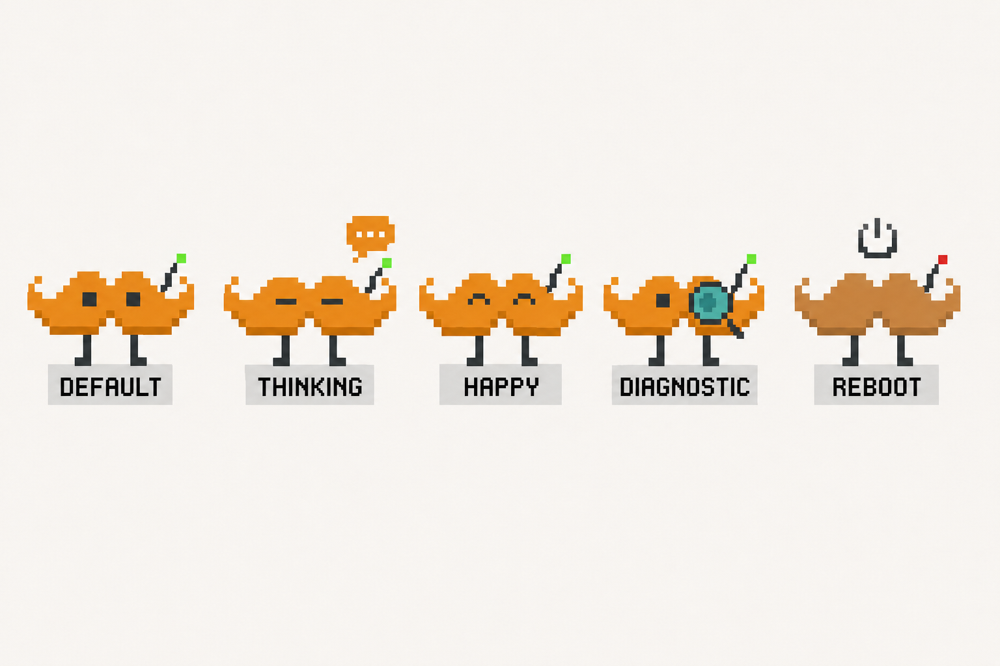

Before — flipbook baseline

Whole-sprite pre-rendered PNG. Motion is a flipbook of full-frame poses — the legs and antenna cannot move independently, and it knows nothing about live data.
After — forged & data-reactive
Independent part articulation + reacts to live data via the Phase-4 orchestrator.
Priority alert > active > idle; downgrades hold for hysteresis.